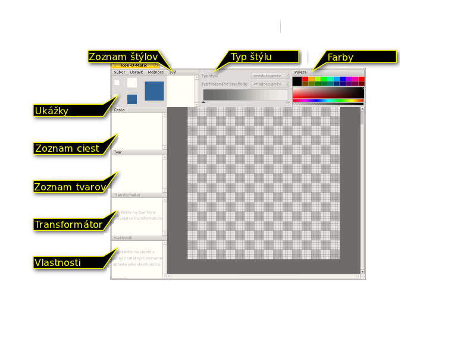

Slovenčina
Slovenčina Català
Català Deutsch
Deutsch English
English Español
Español Français
Français Italiano
Italiano Magyar
Magyar Polski
Polski Português
Português Português (Brazil)
Português (Brazil) Română
Română Suomi
Suomi Svenska
Svenska 中文 ［中文］
中文 ［中文］ Русский
Русский Українська
Українська 日本語
日本語| Obsah |
| BeOS bitmapové vs. Haiku vektorové ikony Ikony sú atribúty Tvorenie ikon v Icon-O-Matic Cesta Tvar Štýl Transformátor Uloženie ikony Tipy & Triky |
 Icon-O-Matic
Icon-O-Matic
| Panel: | ||
| Umiestnenie: | /boot/system/apps/Icon-O-Matic | |
| Nastavenia: | ~/config/settings/Icon-O-Matic |
Predtým, než začneme vytvárať ikony v Icon-O-Matic, si povieme zopár slov o ikonách v Haiku vo všeobecnosti.
 Bitmapové ikony BeOS vs. vektorové ikony Haiku
Bitmapové ikony BeOS vs. vektorové ikony Haiku
Na rozdiel od BeOS, Haiku používa vektorové ikony namiesto bitmapových. Špeciálny formát pre vektorové ikony v Haiku (HVIF) bol vyvinutý tak, aby bola veľkosť súboru ikony malá a aby bolo vykresľovanie rýchle. Preto sú naše ikony väčšinou oveľa menšie ako bitové mapy alebo veľmi rozšírený formát SVG. Taktiež, na rozdiel od bitmapových ikon BeOS, nie sú ikony v Haiku obmedzené 8-bitovou paletou (256 farieb).
Pozrite sa napríklad na túto ikonu Terminálu:
| Bitmapové | SVG | HVIF |
| 1 024 bajtov + 256 bajtov | 7 192 bajtov | 768 bajtov |
Všimnite si, že BeOS používa dve verzie tej istej ikony, jednu 16x16 a druhú 32x32, na dosiahnutie výsledku v režime zoznamu a v režime zobrazenia ikon.
Vektorové ikony tento trik nepotrebujú. Nielenže zaberajú iba pár stoviek bajtov, ale ich veľkosť je oveľa lepšie prispôsobiteľná ako veľkosť bitmapových ikon. (Poznámka: BeOS ponúklo iba veľkosti 16x16 a 32x32.)
| 16x16 | 32x32 | 64x64 | 128x128 | |
| Bitmapové |  |
 | ||
| Vektorové |  |
 |
Ikony sú atribúty
Ikony sú v súboroch uložené ako ich atribúty. To ale neznamená, že je nutné, aby každý súbor mal tento atribút na to, aby mal zobrazenú ikonu v okne Trackera: dátové súbory dedia svoje ikony podľa typu súboru. Globálne sa dá zmeniť ikona typu súboru v nastaveniach Typov súborov Ak chcete iba pridať špeciálnu ikonu individuálnemu súboru, môžete použiť doplnok FileType. Ďalšie informácie nájdete v téme Typy súborov.
Tvorenie ikon v Icon-O-Matic
Icon-O-Matic je editor ikon Haiku, ktorý dokáže uložiť vašu prácu vo formátoch HVIF, SVG alebo PNG. Ikona tiež môže byť priamo pripojená ako atribút existujúcemu súboru alebo ako zdroj alebo zdrojový kód pre vývojárov. Keďže aplikácia bola ušitá na mieru optimalizovanému formátu HVIF, jej používanie odráža vnútorné fungovanie tohto formátu.
Na rozdiel od bežného softvéru na tvorbu vektorovej grafiky tu nebudete pracovať so samostatnými objektmi s konkrétnymi vlastnosťami ako cesta, šírka ťahu, farba ťahu a výplne atď. Namiesto toho budete skladať objekty („tvary“) zo zdieľaných ciest a farieb („štýly“) a nastavovať určité vlastnosti. Opätovné použitie prvkov je jedným z tajomstiev efektivity HVIF. Napriek tomu, že táto metóda predstavuje pre používateľa niekoľko obmedzení, má aj svoje výhody. Napríklad opätovným použitím cesty možno modifikovať niekoľko objektov upravením tejto jednej cesty. Dá sa to prirovnať k objektu a jeho tieňu. Úprava zdieľanej cesty zmení samotný objekt a automaticky (hoci možno skreslene) aj jeho tieň.
Tu je rýchly prehľad okna Icon-O-Matic:
Aby ste mohli na plátne vytvoriť viditeľný objekt, potrebujete tvar s jeho cestou a štýlom. Pohodlne môžete vytvoriť jeden, dva alebo všetky 3 z menu . Každý druh objektu (cesta, tvar, transformátor a štýl) má svoj vlastný zoznam prvkov, ktoré ponúkajú rôzne príkazy. Každý prvok má určité možnosti, ktoré sa nastavujú v .
Cesta
Cesta pozostáva z niekoľkých bodov spojených čiarami alebo Bézierovými krivkami. Ak chcete pridávať alebo meniť body, uistite sa, že daná cesta je vybraná v zozname ciest.
Jednoduché kliknutie na plátno nastaví prvý bod. Počas nastavovania bodu rozhodujete, či bude výsledná čiara rovná alebo krivá: jednoduché kliknutie a pustenie vyprodukuje rovnú čiaru, podržanie tlačidla a posunutie myši vysunie úchopy Bézierovej krivky. Samozrejme, všetko môžete neskôr zmeniť.

Aby ste sa dostali z obrázka „A“ do „B“, musíte transformovať niektoré body z rohových na krivkové. To sa robí držaním klávesu ALT počas kliknutia na bod, čím sa vysunú úchopy. Takto vznikne symetrický Bézier: prvý úchop kopíruje pohyb druhej. Ak chcete, aby sa úchopy hýbali nezávisle, znovu kliknite a pretiahnite úchop Béziera počas držania klávesu ALT.
Zmeniť riadiaci bod Bézierovej krivky na rohový bod môžete znova držaním klávesu ALT počas kliknutia na bod.
Ak chcete presunúť bod, jednoducho naň kliknite a pretiahnite ho myšou. Viac bodov sa dá vybrať držaním kĺavesu SHIFT, čím natiahnete obdĺžnik výberu. Označené body sa líšia od neoznačených červeným okrajom namiesto čierneho.
Ak chcete do existujúcej cesty pridať bod, kliknite na čiaru medzi bodmi, ktoré ju určujú. Označené body môžete odstrániť stlačením DEL alebo kliknutím na bod počas držania klávesu CTRL.
Kurzor myši indikuje aktuálny režim:
| Presúvanie bodov | Vkladanie bodov | Pridanie bodov | Odstránenie bodov CTRL |
Rohové↔Bézierove body ALT |
Výber bodov SHIFT |
Kliknutím na bod alebo výber bodov pravým tlačidlom myši vyvoláte kontextové menu:
| ALT A | Vyberie všetky body aktuálnej cesty. | |
| T | Vloží všetky vybrané body do transformačného boxu, čo vám umožňuje hýbať, meniť veľkosť a otáčať všetky body spolu. Funguje to presne ako s tvarmi (popísané nižšie). | |
| Rozdelí vybrané body na dva na sebe ležiace. | ||
| Otočí vybrané body o 180°. Ovplyvňuje iba Bézierove body. | ||
| DEL | Odstráni všetky vybrané body. |
Menu cesty
Menu ponúka niekoľko samozrejmých položiek, ako a alebo či cestu. Tu sú tie, ktoré možno treba trochu objasniť:
| Ak vaša cesta nie je „uzavrená“ (pozrite Vlastnosti cesty nižšie), kliknutie na plátno vždy vytvorí nový bod, ktorý sa spojí s posledným. Možnosť „Obrátiť“ prevráti toto poradie a váš nový bod bude pripojený k pôvodnému začiatočnému bodu. | ||
| Užitočné pri importe SVG, táto funkcia odstráni nadbytočné body. | ||
| ALT R | Táto funkcia otočí otvor cesty. Najlepšie je to vidieť na neuzavretej ceste so štýlom a transformátorom ťahu. Ak vaša cesta vyzerá ako ⊂, bude sa otáčať takto: ⊂ ∩ ⊃ ∪ (v smere hodinových ručičiek). | |
| ALT SHIFT R | Robí to isté v opačnom smere. |
Vlastnosti cesty
v dolnej časti okna vľavo ponúkajú všetky dostupné nastavenia aktuálne vybraných objektov. Cesta má iba dve: a či je alebo nie.
Tvar
Tvar zlučuje jednu alebo viac ciest so štýlom. V podstate je to objekt, ktorý bude na plátne viditeľný. Zlučovanie sa robí zaškrtávacími políčkami, ktoré sú pred cestami a štýlmi: Jednoducho vyberte váš tvar a zaškrtnite cesty a štýl, ktoré požadujete.
Tvar udáva, ako budú cesta a štýl aplikované, napr. či má byť objekt vyplnený alebo iba načrtnutý (čo sa robí pomocou Transformátorov, k tomu sa dostaneme neskôr). Tvar môžete tiež presúvať, otáčať alebo meniť jeho veľkosť bez akejkoľvek manipulácie s použitými cestami. Týmto spôsobom môžete viackrát použiť tú istú cestu a dostať tak rôzne, ale príbuzné tvary.

Okolo označeného tvaru sa zobrazí obdĺžnik. Podľa toho, kde ho uchopíte ním môžete hýbať, meniť jeho veľkosť alebo otáčať ho okolo bodu v strede tvaru, ktorý tiež môžete presunúť. Držaním klávesu SHIFT uzamknete smer hýbania, obmedzíte otáčanie na 45° a zachováte pomer strán pri zmene veľkosti. Kurzor myši znova indikuje aktuálny režim:
| Presúvanie | Zmena veľkosti | Otáčanie | Presúvanie stredu otáčania |
Tvary na sebe ležia, dalo by sa povedať, že každý vo svojej vlastnej vrstve. Ak chcete zmeniť poradie týchto vrstiev, môžete tak urobiť jednoduchým uchopením a pretiahnutím na inú pozíciu v zozname tvarov.
Menu tvaru
Menu ponúka už spomenutú možnosť a alebo tvar. Ďalej sú tu možnosti:
| Vráti späť všetky presuny, zmeny veľkosti a rotácie, ktoré ste aplikovali na daný tvar. | ||
| Keď transformujete tvar, jeho pridelené cesty zostanú v pôvodnej pozícii. Je to tak úmyselne; možno viac ako jeden tvar používa danú cestu, možno ste úmyselne použili aby ste umiestnili body na presných okrajoch. Ak nie, „Zmraziť transformáciu“ aplikuje aktuálnu transformáciu tvaru na cesty, ktoré mu patria. Následná funkcia „Obnoviť transformáciu“ potom vráti tvar do tohto nového stavu. |
Vlastnosti tvaru
Okrem ponúka okno tvaru tieto možnosti:
| Minimálna úroveň detailov | ||
| Maximálna úroveň detailov |
Úroveň detailov (LOD)
| 16x16 | 32x32 | 64x64 |
Všimli ste si, že na 16-pixlovej verzii ikony BeVexed nie sú žiadne čísla? To sa robí pomocou nastavenia detailov vo vlastnostiach tvarov.
S touto funkciou môžete kontrolovať viditeľnosť tvaru v závislosti od veľkosti ikony. Týmto spôsobom môžete vynechať detaily, ktoré vyzerajú dobre na väčšej ikone, no zle na menšej verzii.
Funguje to takto: úroveň detailu 1,0 je definovaná ako ikona o veľkosti 64 px. Úroveň detailu ikony vypočítate tak, že veľkosť ikony jednoducho vydelíte číslom 64, napr. ikona veľká 16 px má úroveň detailov 16/64 = 0,25. Tvar nebude viditeľný pod svojím a nad svojím .
Takže ak nastavíte tvaru 0,0 a 0,5, znamená to, že tvar bude viditeľný iba v ikonách s veľkosťou rovnou alebo menšou ako 32 px. Aj chcete vynechať veľkosť 32 px, musí byť úroveň detailov nižšia ako 0,5, teda napr. 0,49.
Úroveň detailov neslúži iba na vynechávanie detailných tvarov, ale napríklad aj na zmenu hrúbky ťahu v iných veľkostiach ikony. Jednoducho duplikujte tvar, urobte vami požadované zmeny a nastavte úroveň detailov tak, aby sa zobrazoval buď jeden, alebo druhý tvar. Toto môže potenciálne spôsobiť zmätok, keď nevedomky prekryjete úroveň detailu a neviete, prečo sa na jednej veľkosti zobrazujú oba tvary...
Napríklad, ak Tvar 1 má byť zobrazený pod veľkosťou 48px a Tvar 2 nad veľkosťou 48px (Úroveň detailov: 48/64 = 0.75):
| OK | Zle! | ||||
| Tvar 1 | Min. detail | 0.00 | Min. detail | 0.00 | |
| Max. detail | 0.74 | Max. detail | 0.75 | ||
| Tvar 2 | Min. detail | 0.75 | Min. detail | 0.75 | |
| Max. detail | 4.00 | Max. detail | 4.00 | ||
Štýl
Štýl môže byť buď pevne daná farba alebo nejaký druh farebného prechodu.
Okrem preddefinovaných farieb pod si môžete namiešať vašu vlastnú kliknutím na aktuálnu farbu. Tiež si všimnite posuvník pod farebným spektrom, ktorým sa nastavuje alfa kanál.
Takto môžete rýchlo vytvoriť nový štýl namiešaním vašej vlastnej farby a jednoduchým uchopením a pretiahnutím myšou do zoznamu štýlov.
Ak si vyberiete farebný prechod, najprv nastavte jeho typ (, , , ) a potom vyberte začiatočnú a konečnú farbu. To sa robí pretiahnutím farby myšou z farebného segmentu do indikátorov farieb pod farebným prechodom.
Samozrejme, tieto indikátory môžete presúvať a meniť tak farebný prechod podľa vášho vkusu. Ak chcete mať vo farebnom prechode viac farieb, môžete dvojklikom na farebný prechod pridať nové indikátory. Stlačenie klávesu DEL odstráni vybraný indikátor.
Obdĺžnik predstavujúci farebný prechod môžete presúvať, otáčať a meniť jeho veľkosť. Funguje to presne tak, ako pri tvaroch.
Menu štýlu
Menu ponúka známe nastavenia , alebo štýl a .
Vlastnosti štýlu
The je jediná štýlu.
Transformátor
Transformátor dokáže meniť vzhľad tvaru. Nečakajte ale, že premení vaše auto na bojového robota...
Pridanie transformátora
| Pridá tvaru obrys. | ||
| Nakreslí cestu tvaru namiesto vyplnenia štýlom. |
V závislosti od druhu Transformátora môžete nastavovať rôzne vlastnosti.
Vlastnosti transformátora
Okrem a ponúka okno transformátora (v závislosti od typu mierne odlišné) možnosti:
| Iba pre Ťah. Definuje zakončenia čiary: , alebo . | ||
| Iba pre Obrys. Určuje, či sa obrys nachádza vo vnútornej alebo vonkajšej strane cesty. | ||
| Určuje akým spôsobom sa čiary spájajú v bode: , alebo . | ||
| Iba keď sú hore uvedené nastavené na „Ostrý“, toto nastavenie má vplyv na vzhľad ostrého spoja. |
Uloženie ikony
V hornej časti okna sa nachádza typická menu lišta, ktorá obsahuje možnosti , , . Z názvov je jasné, akú majú funkciu, takže bližšie si popíšeme iba ukladanie.
uloží ikonu v špecialnom formáte Icon-O-Matic, ktorý uchováva informácie ako názvy ciest, tvarov a štýlov. Tieto informácie budú odstránené potom, ako ikonu exportujete, aby sa ušetrilo miesto. Týmto spôsobom je dobré zálohovať vašu prácu, pretože bez pomenovaných objektov sa všetkému priradí názov „<path>/<shape>/<style>“, kvôli čomu môže byť ďalšia práca s ikonou únavná.
otvorí známy panel uloženia s možnosťou výberu formátu. Ponúka tieto možnosti:
| HVIF | Vektorový formát ikony Haiku | |
| HVIF RDef | Uloží ako zdroj pre programátorov | |
| Zdrojový kód HVIF | Uloží ako zdrojový kód pre programátorov | |
| SVG | Uloží ako SVG | |
| PNG | Uloží ako PNG s veľkosťou 64 pixlov | |
| Množina PNG | Uloží ako PNG s veľkosťami 16, 32 a 64 pixlov | |
| Atribút BEOS:ICON | Vyberte súbor a priamo mu priraďte ikonu ako atribút | |
| Atribút META:ICON | Vyberte súbor a pripojte k nemu ikonu ako prosté metadáta |
Tipy & Triky
Zopár vecí, na ktoré by ste mali myslieť počas práce s Icon-O-Matic a všeobecné tipy pri používaní:
Read the Icon Guidelines to learn about important characteristics of Haiku icons, e.g. perspective, shadows and the Haiku color palette.
Vždy by ste sa mali snažiť minimalizovať počet použitých ciest, lebo tie najviac zväčšujú výslednú veľkosť súboru. Cesty používajte opätovne tam, kde je to možné a pracujte s manipulovanými tvarmi a ich transformátormi. Šikovné použitie farebných prechodov vám tiež môže ušetriť miesto.
Tam, kde je to možné, by ste mali aktivovať možnosť Prichytávať k mriežke v počas práce s cestami. Body cesty zarovnané so sieťou 64x64 pixlov zaberajú menej miesta. Ak body nastavíte presne do rohov siete, dostanete najostrejší výsledok. Napríklad je dôležité zarovnať najvýraznejšie obrysy so sieťou 16x16 pixlov.
V náhľade zistite, či vaša ikona vyzerá dobre vo veľkosti 16x16. Možno sa vám zíde nastavenie Úroveň detailov popísané v sekcii Tvary.
Napriek tomu, že Icon-O-Matic nemá funkciu na vkladanie znakov, dá sa to urobiť ľahkým spôsobom. Jednoducho otvorte textový editor ako napr. StyledEdit, prispôsobte si typ štýl písma a myšou pretiahnite alebo skopírujte a vložte text do Icon-O-Matic. Všetky cesty a tvary sa vytvoria automaticky.
Ak jednému tvaru priradíte viac ako jednu cestu, ich prekrývajúce sa časti sa navzájom vymažú. Keď sa jedna cesta celá nachádza v druhej, vytvorí tak vo výslednom tvare dieru.
Plátno môžete pomocou kolieska myši priblížiť. Posúvať sa po plátne môžete buď držaním stredného tlačidla myši alebo ľavým tlačidlom počas držania klávesu SPACE.
{kind=link}